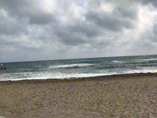

PNG ist ein Format mit verlustfreier Kompression. Die Datei kann schnell sehr gross werden und ist nur für wenige und kleine Bilder geeignet.
Dasselbe Bild in einer recht stark komprimierten JPG-Variante. JPG lässt sich beliebig komprimieren (und ist damit geeignet für das Web); jedoch ist irgendwann keine Qualität mehr vorhanden. Trotz der starken Kompression sind hier noch kaum Unterschiede zu erkennen. Je nach Art des Bildes fällt ins Gewicht, dass JPG gegenüber PNG keine Transparenz kennt.

GIF für reine Bilder ist eher selten und ist eher weniger geeignet.
Hier ist das Video von der Videoseite als stark komprimiertes GIF-Minivideo. Vor Allem für (animierte) Memes ist GIF ein beliebtes Format.
Im Gegensatz zu allen obigen Formaten, die pixelbasiert sind, ist SVG Vektorbasiert. Daher lässt sich damit kaum ein Photo machen; hingegen ist es perfekt geeignet für Graphiken. Für ein Beispiel siehe den Kompass auf der Animationenseite.